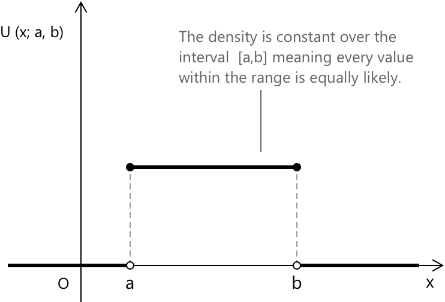

Рівномірний розподіл
Означення рівномірного розподілу
Рівномірний розподіл є одним із найпростіших для опису неперервних розподілів. Він моделює випадкову змінну, яка може набувати будь-якого значення в заданому проміжку, присвоюючи однакову ймовірність усім підпроміжкам однакової довжини. Іншими словами, можливі результати рівномірно розподілені по проміжку, і жодна область не є більш імовірною за іншу.
У формальних термінах, кажуть, що неперервна випадкова змінна \( X \) має рівномірний розподіл на проміжку \(A = [a, b]\), якщо її функція щільності ймовірності є сталою на цьому проміжку. Формально маємо:
\[ U(x;a,b) = \begin{cases} \dfrac{1}{\,b – a\,} & x \in A \\[0.6em] 0 & x \notin A \end{cases} \]
Для будь-яких двох підпроміжків \( I_1 \) та \( I_2 \), що містяться в \([a, b]\) і мають однакову довжину, рівномірний розподіл присвоює їм однакову ймовірність. Якщо \( w \) позначає спільну ширину цих проміжків, то:
\[ P(I_1) = P(I_2) = \frac{w}{\,b – a\,} \]
На зображенні показано щільність рівномірного розподілу на проміжку \([a, b]\). Плоска горизонтальна лінія вказує на те, що кожному значенню від \(a\) до \(b\) присвоюється однакова ймовірність. Кінцеві точки зображені як відкриті кола, щоб підкреслити ключову властивість неперервних розподілів: окремі точки мають нульову ймовірність, і ми маємо:
\[ P(X = x_0) = 0 \]

Ключові особливості
-
\[\text{1. } \quad U(x;a,b) = \frac{1}{b – a} \quad a \le x \le b \]
-
\[\text{2. } \quad \mu = E(X) = \frac{a + b}{2} \]
-
\[\text{3. } \quad \sigma^{2} = \mathrm{Var}(X) = \frac{(b – a)^{2}}{12} \]
-
\[\text{4. } \quad \sigma = \frac{b – a}{2\sqrt{3}} \]
Кожен вираз підкреслює ключову властивість рівномірного розподілу, показуючи, як ймовірність рівномірно розподіляється по проміжку і як його середнє значення та мінливість залежать виключно від кінцевих точок \(a\) та \(b\).
Середнє значення рівномірного розподілу
Середнє значення, або математичне сподівання рівномірного розподілу описує середній результат, який ми очікуємо від випадкової змінної, що може набувати будь-якого значення між \(a\) та \(b\) з однаковою ймовірністю. Оскільки розподіл повністю плоский на цьому проміжку, обчислення математичного сподівання є простим і випливає безпосередньо із загального означення:
\[ \mu = E(X) = \int_{a}^{b} x\, U(x;a,b) \, dx \]
Для рівномірного розподілу функція щільності ймовірності є сталою:
\[ f(x) = \frac{1}{b – a} \qquad \text{для } a \le x \le b \]
Підставляючи цей вираз в інтеграл, отримаємо:
\[ E(X) = \int_{a}^{b} x \frac{1}{b – a} \, dx \]
Оскільки щільність не змінюється на проміжку, ми можемо просто винести її за знак інтеграла:
\[ E(X) = \frac{1}{b – a} \int_{a}^{b} x \, dx \]
Залишок інтеграла є елементарним. Первісна від \(x\) дорівнює \(x^{2}/2\), тому обчислення її між \(a\) та \(b\) дає:
\[ \int_{a}^{b} x \, dx = \frac{b^{2}}{2} - \frac{a^{2}}{2} \]
Підставляючи це назад у вираз для математичного сподівання, отримаємо:
\[ E(X) = \frac{1}{b - a} \left( \frac{b^{2} - a^{2}}{2} \right) \]
Зауважимо, що \( b^{2} – a^{2} = (b – a)(b + a) \), тому вираз спрощується до:
\[ E(X) = \frac{b + a}{2} \]
Це показує, що середнє значення рівномірного розподілу є точною серединою проміжку \([a, b]\).
Дисперсія рівномірного розподілу
Дисперсія рівномірного розподілу описує, наскільки випадкова змінна, як очікується, відхиляється від свого середнього значення. У той час як середнє значення визначає центральне значення проміжку, дисперсія кількісно визначає, наскільки концентрованими або розсіяними є результати на \([a, b]\). Оскільки рівномірний розподіл присвоює однакову щільність кожній точці на проміжку, його мінливість повністю залежить від довжини цього проміжку. Формально, дисперсія для неперервної випадкової змінної визначається як:
\[ \sigma^{2} = \mathrm{Var}(X) = E(X^{2}) - [E(X)]^{2} \]
Виходячи з функції щільності ймовірності рівномірного розподілу, маємо:
\[ E(X^{2}) = \int_{a}^{b} x^{2} U(x;a,b)\, dx \]
Для рівномірного розподілу щільність становить:
\[ U(x;a,b) = \frac{1}{b – a} \]
Підставляючи цей вираз у формулу, отримаємо:
\[ E(X^{2}) = \int_{a}^{b} x^{2} \frac{1}{b – a} \, dx = \frac{1}{b – a} \int_{a}^{b} x^{2}\, dx \]
Інтеграл від \(x^{2}\) обчислюється просто:
\[ \int_{a}^{b} x^{2}\, dx = \frac{b^{3}}{3} - \frac{a^{3}}{3} \]
Таким чином, маємо:
\[ E(X^{2}) = \frac{1}{b - a} \left( \frac{b^{3} - a^{3}}{3} \right) \]
Використовуючи розкладання \( b^{3} – a^{3} = (b – a)(b^{2} + ab + a^{2}) \), вираз спрощується до:
\[ E(X^{2}) = \frac{b^{2} + ab + a^{2}}{3} \]
Тепер поєднаємо це із середнім значенням рівномірного розподілу,
\[ E(X) = \frac{a + b}{2} \]
так що:
\[ [E(X)]^{2} = \left( \frac{a + b}{2} \right)^{2} = \frac{a^{2} + 2ab + b^{2}}{4} \]
Збираючи все разом, отримаємо:
\[ \mathrm{Var}(X) = \frac{b^{2} + ab + a^{2}}{3} – \frac{a^{2} + 2ab + b^{2}}{4} \]
Після спрощення виразу дисперсія набуває вигляду:
\[ \sigma^{2} = \mathrm{Var}(X) = \frac{(b – a)^{2}}{12} \]
Зв'язок між рівномірним та бета-розподілом
Існує зв'язок між рівномірним розподілом та бета-розподілом \(B(x),\alpha,\beta\). Коли обидва параметри форми дорівнюють одиниці, тобто \( \alpha = 1 \) та \( \beta = 1 \), щільність бета-розподілу стає абсолютно плоскою на проміжку \((0,1)\). Функція щільності ймовірності бета-розподілу має вигляд:
\[ B(x;\alpha,\beta) = \frac{x^{\alpha – 1} (1 – x)^{\beta - 1}}{B(\alpha,\beta)} \] \[ 0 < x < 1 \]
При \( \alpha = 1 \) та \( \beta = 1 \) обидва показники степеня в чисельнику стають рівними нулю, а бета-функція обчислюється як \( B(1,1) = 1 \). У результаті щільність спрощується до:
\[ B(x;1,1) = 1 \]
що є саме щільністю рівномірної випадкової змінної на \((0,1)\).
Приклад 1
Промисловий різальний верстат виконує повний цикл за час, який дещо варіюється через механічні допуски та температурні коливання. Вимірювання показують, що час циклу з однаковою ймовірністю може набути будь-якого значення від \(4.8\) до \(5.4\) секунд. Нехай \(X\) позначає час циклу в секундах, і припустимо,
\[ X \sim \mathrm{U}(x; 4.8, 5.4) \]
Обчислити ймовірність того, що випадково обраний цикл триває менше 5 секунд. Щільність рівномірного розподілу на \((a, b)\) є сталою і дорівнює \(1/(b - a)\). Отже,
\[ P(X < 5) = \frac{5 – 4.8}{5.4 – 4.8} \]
Отримаємо:
\[ P(X < 5) = \frac{0.2}{0.6} = \frac{1}{3} \]
Таким чином, ймовірність становить приблизно \(0.333\).
Визначити ймовірність того, що час циклу лежить у проміжку від 5.1 до 5.3 секунд. Маємо:
\[ P(5.1 \le X \le 5.3) = \frac{5.3 - 5.1}{5.4 - 4.8} \]
Це дає:
\[ P(5.1 \le X \le 5.3) = \frac{0.2}{0.6} = \frac{1}{3} \]
Отже, ймовірність знову становить приблизно \(0.333\).
Знайти математичне сподівання часу циклу \(E(X)\). Для рівномірного розподілу на \((a, b)\) маємо:
\[ E(X) = \frac{a + b}{2} \]
Таким чином:
\[ E(X) = \frac{4.8 + 5.4}{2} = \frac{10.2}{2} = 5.1 \]
Математичне сподівання часу циклу становить 5.1 секунд.
Обчислити дисперсію \(\mathrm{Var}(X)\). Дисперсія рівномірного розподілу на \((a, b)\) дорівнює:
\[ \mathrm{Var}(X) = \frac{(b - a)^{2}}{12} \]
Підставляючи значення, отримаємо:
\[ \mathrm{Var}(X) = \frac{(5.4 - 4.8)^{2}}{12} = \frac{0.6^{2}}{12} = \frac{0.36}{12} = 0.03 \]
Отже, дисперсія дорівнює \(0.03\).